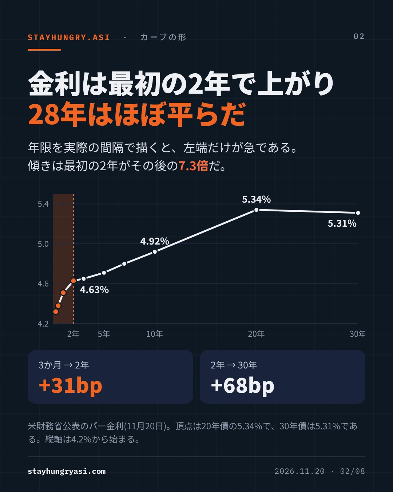
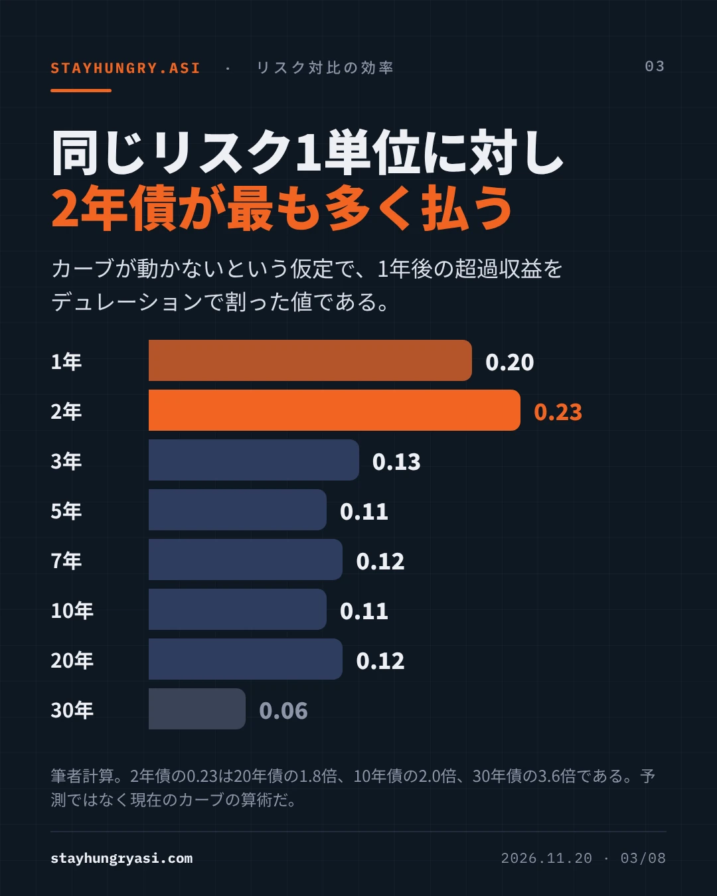
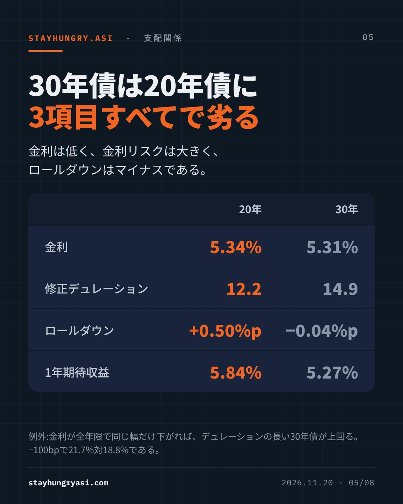
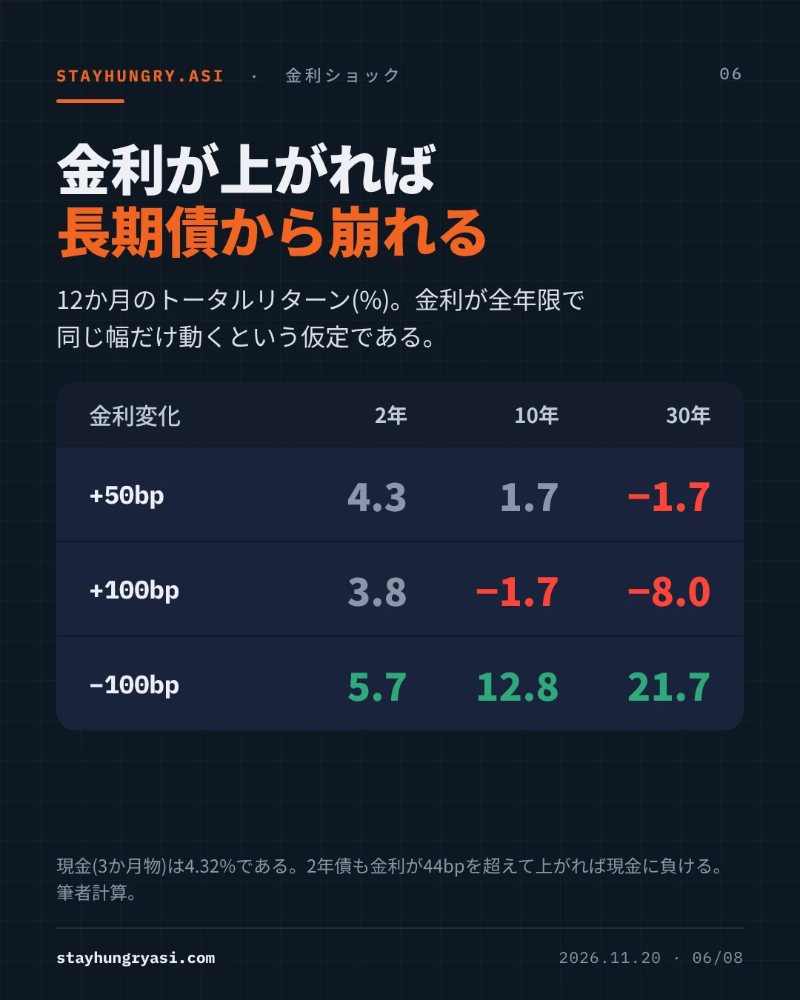

データ基準 2026年11月20日 米国終値 · stayhungryasi.com
表記ルール:金利は米財務省の公表値で、デュレーション・期待収益・クッション・効率はその金利から筆者が計算した値である。解釈は筆者判断として記した。確認できなかった項目は「未確認」と記した。投資勧誘ではない。
要点を8枚にまとめた。画像を押すと拡大できる。
金利は米財務省の日次パー・イールドカーブ(11月)と10月の表から取った。2年債は11月18日までFREDと照合し、一致を確認した。11月19日と20日の数値は財務省の単一出所であり、20日の2年債4.63%と10年債4.92%は別の報道と一致した。
11月第2週は、物価が予想を上回りFRBの利上げ観測が強まって金利が急騰した(ブルームバーグ)。2年債は11月13日に4.88%まで上がった。翌週は株式の急落と安全資産選好で金利が下がり(CNBC)、2年債は11月20日に4.63%と1週間で25bp下がった。
| 年限 | 10月20日 | 11月13日 | 11月20日 | 1か月の変化(bp) |
|---|---|---|---|---|
| 3か月 | 4.26 | 4.32 | 4.32 | +6 |
| 6か月 | 4.36 | 4.42 | 4.38 | +2 |
| 1年 | 4.51 | 4.65 | 4.51 | 0 |
| 2年 | 4.79 | 4.88 | 4.63 | −16 |
| 3年 | 4.86 | 4.92 | 4.65 | −21 |
| 5年 | 4.94 | 4.98 | 4.71 | −23 |
| 7年 | 5.02 | 5.05 | 4.80 | −22 |
| 10年 | 5.12 | 5.15 | 4.92 | −20 |
| 20年 | 5.47 | 5.52 | 5.34 | −13 |
| 30年 | 5.42 | 5.47 | 5.31 | −11 |
債券を1年保有して得る収益は、金利(キャリー)とロールダウンの合計である。ロールダウンは、残存年限が1年短くなり金利の低いゾーンへ下りるときに生じる価格上昇分だ。ここから3か月物の金利4.32%を引くと超過収益になり、それを修正デュレーションで割るとリスク1単位当たりの報酬になる。
クッションは、1年間に金利がその幅だけ上がっても3か月物と収益が同じになる幅である。変動幅は10月20日から11月20日までの高値と安値の差だ。クッションが変動幅より大きい年限は2年債だけで、差は44対42と僅かである。
| 年限 | 修正デュレーション | 期待収益(%) | 超過収益(%p) | クッション(bp) | リスク当たり報酬 | 変動幅(bp) |
|---|---|---|---|---|---|---|
| 1年 | 0.97 | 4.51 | 0.19 | – | 0.20 | 37 |
| 2年 | 1.89 | 4.75 | 0.43 | 44 | 0.23 | 42 |
| 3年 | 2.77 | 4.69 | 0.37 | 20 | 0.13 | 39 |
| 5年 | 4.41 | 4.82 | 0.50 | 14 | 0.11 | 39 |
| 7年 | 5.89 | 5.03 | 0.71 | 14 | 0.12 | 35 |
| 10年 | 7.82 | 5.21 | 0.89 | 12 | 0.11 | 31 |
| 20年 | 12.20 | 5.84 | 1.52 | 13 | 0.12 | 25 |
| 30年 | 14.92 | 5.27 | 0.95 | 7 | 0.06 | 22 |
3か月物から2年債まで金利は31bp上がり、2年債から30年債までは68bp上がる。1年当たりの傾きは前半が17.7bp、後半が2.4bpで7.3倍の差がある。全体の上昇幅99bpのうち31%が最初の2年に集まっている。
頂点は20年債の5.34%で、30年債は5.31%と3bp低い。カード2のグラフは縦軸が4.2%から始まるため、傾きが実際より急に見える点を明記しておく。
30年債は20年債より金利が低く(5.31%対5.34%)、修正デュレーションが長く(14.92対12.20)、ロールダウンがマイナスである(−0.04%p対+0.50%p)。1年期待収益は5.27%対5.84%だ。3項目すべてで劣る。
3年債は2年債より期待収益が低い(4.69%対4.75%)。デュレーションは1.5倍である。5年債は期待収益が4.82%で2年債より0.07%p高いが、デュレーションは2.3倍だ。
下の表は、金利が全年限で同じ幅だけ動いたときの12か月トータルリターン(%)である。最後の行は、FRBが織り込み以上に利上げする場合を想定し、2年債+100bp、10年債+50bp、30年債+25bpとした筆者の仮定だ。
金利が上がる局面では年限が短いほど損失が小さい。金利が下がる局面では30年債が最も大きく上がる。2年以内の優位は方向が分からないときの効率であり、金利低下を確信するときの最適ではない。
| 金利変化 | 2年 | 5年 | 10年 | 20年 | 30年 |
|---|---|---|---|---|---|
| +50bp | 4.3 | 3.0 | 1.7 | 0.1 | −1.7 |
| +100bp | 3.8 | 1.3 | −1.7 | −5.2 | −8.0 |
| −50bp | 5.2 | 6.6 | 8.9 | 12.0 | 13.0 |
| −100bp | 5.7 | 8.5 | 12.8 | 18.8 | 21.7 |
| 短期急騰(仮定) | 3.8 | 2.1 | 1.4 | 1.6 | 1.5 |
パー債、半年利払い、年限間の線形補間、12か月保有を仮定した。クーポンの再投資収益、税金、取引コスト、為替は入れていない。期待収益はカーブが変わらないという仮定の算術であり、見通しではない。
タームプレミアムの推計値と国債入札の指標は確認できなかった(未確認)。為替ヘッジのコストは検証できなかったため、本稿では扱わない。